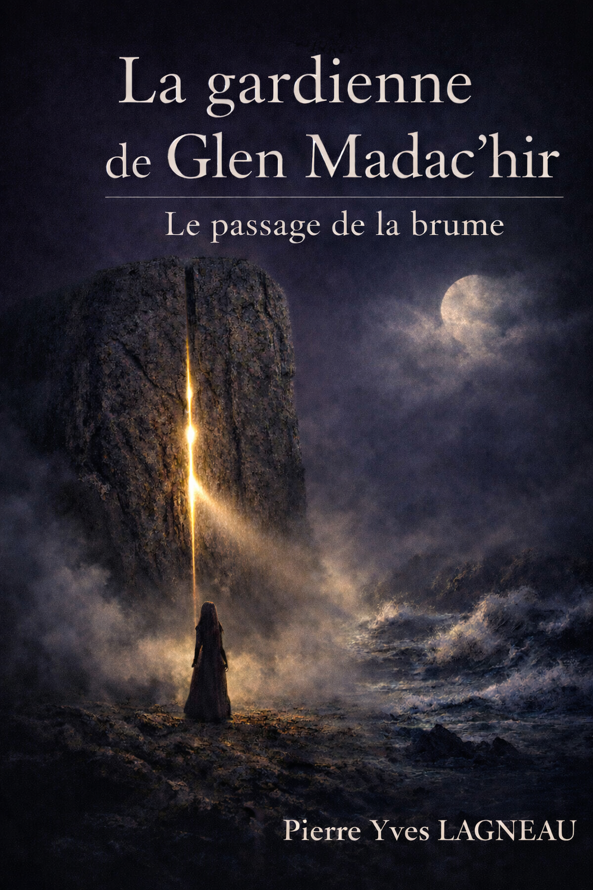

Merci pour votre curiosité. Vous entrez dans un univers où chaque livre se découvre autant qu’il se ressent. Laissez-vous porter par les mots, les images, la musique et les sensations.
Chaque ouvrage que je publie est une expérience immersive : un voyage intérieur, une atmosphère, une émotion à part entière. Laissez-vous porter par les mots, les images, la musique et les sensations.
Une pierre dressée. Une brume qui s’ouvre. Une Lune Noire qui déchire les mondes. Dans les landes de Glen Madac’hir, Klervi, guérisseuse immortelle, affronte les ombres, les croyances et un amour qui traverse les siècles. Un roman mystique, poétique et sensoriel, où chaque chapitre s’accompagne de sa musique et de son image dédiée.
[EXTRAIT_1]
✨ Choisir mon format ✨
Après votre achat, vous recevrez un email avec les trois formats (PDF, EPUB et broché).
📖 Pour ceux qui aiment tourner les pages comme on caresse une mémoire, le livre existe aussi en version brochée (14€94).